|
Java Editor |
|
Constructor completion
|
Content Assist can now propose the available constructors of a class when
the completion happens in an allocation expression:
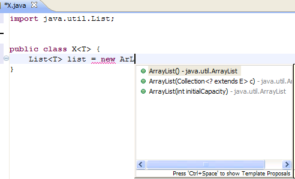
If the class is not already imported (as shown in the example above),
then the corresponding import will also be added.
|
|
Open Implementation hyperlink
|
An Open Implementation hyperlink has been added for overridable methods, which directly opens the implementation
in case there's only one, or shows all the concrete implementations for that method in the hierarchy of its declaring type, using
the quick type hierarchy. By default, the hyperlink appears when you hold down the Ctrl key
while hovering over an overridable method.
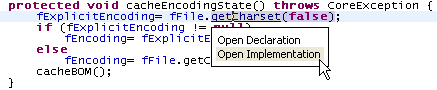
You can configure the modifier for this hyperlink on the General > Editors > Text Editors > Hyperlinking preference page.
|
|
Quick Fix to start Rename refactoring
|
The Rename refactoring can now also be started via Quick Fix (Ctrl+1):
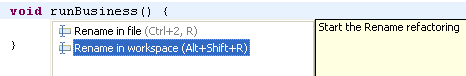
|
|
Open in Properties File action in NLS Hover
|
The NLS string hover now has an Open in Properties File action in the toolbar which
locates the selected NLS string in the corresponding properties file where it is defined. The action
is activated in the toolbar with focus on the hover.
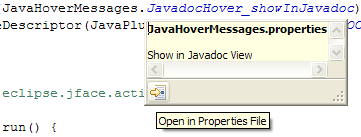
|
|
Formatter option to preserve user line breaks
|
The Java code formatter can now optionally preserve user line breaks by not joining lines in code or comments.
For example, the wrapped lines of the return statement in following test case:

will be preserved by the formatter when the Never join lines preference is used and now produces the following result:

This preference can be configured on the Java > Code Style > Formatter preference page.
See the Never join lines option on the Line Wrapping and Comments tab.
|
|
Java Compare Editor |
|
General typing enhancements |
The Java Compare editor now supports new text editing features like move/copy/delete line and formatting.
|
|
Hyperlinking
|
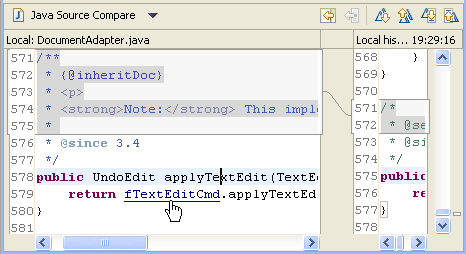
|
|
Content Assist
|
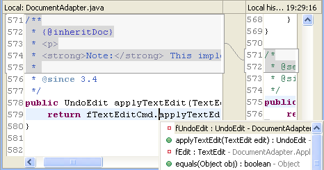
|
|
Javadoc on hover
|
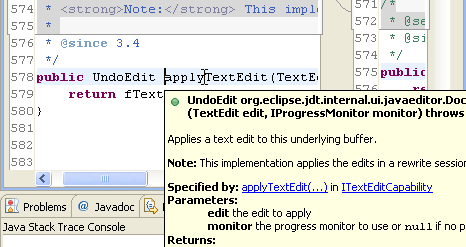
|
|
Quick Outline
|
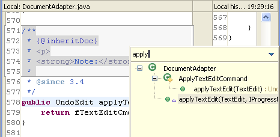
|
|
Reconcile Java compare structure while typing
|
The Java compare editor now updates its structure while you are typing inside the editor.
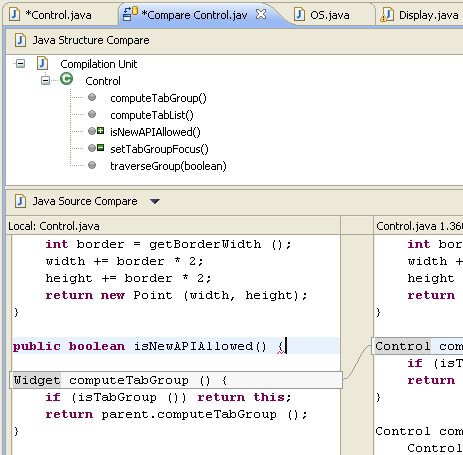
|
|
Java Refactoring and Source Actions |
|
Generate toString()
|
The new toString() generator allows you to quickly generate a toString() method for your class.
Source > Generate toString()... offers several options to configure the
format of the resulting String and the style of the generated code in the toString() method body.
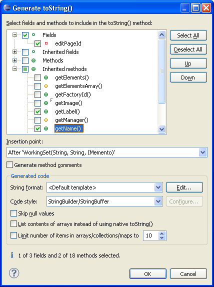
|
|
Optionally use blocks when generating hashCode() and equals()
|
The Generate hashCode() and equals() wizard now allows you to choose
whether blocks are used for if statements:
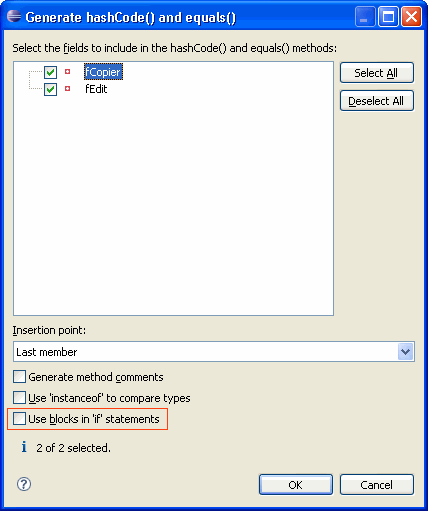
|
|
Java Compiler |
| New compiler diagnostic |
Comparing identical values is now detected
by the compiler and reported as a warning by default:
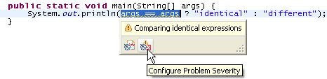
You can configure this setting in the Potential programming problems section
on the Java > Compiler > Errors/Warnings preference page,
or by clicking the Configure Problem Severity button in the
problem hover toolbar. |
|
Compiler problem for missing synchronized modifier
|
The compiler now issues a warning when a method overrides a synchronized method
but the method itself is not synchronized.
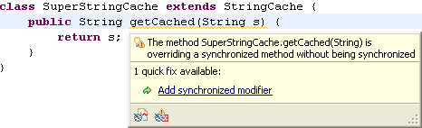
You can use the quick fix to add the synchronized modifier, and you can
configure the problem severity on Preferences > Java > Compiler > Errors/Warnings
in the Potential programming problems section.
|
|
Suppress compiler problem for 'switch' case fall-through
|
The compiler problem for expected fall-throughs in switch case statements can now be suppressed by preceding
the following case statement with a comment that starts with $FALL-THROUGH$. This is especially
interesting for code that can't use the J2SE-5.0-style @SuppressWarnings("fallthrough") annotation.
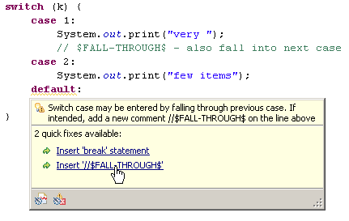
This problem is not reported by default. You can enable the 'switch' case fall-through warning on
Preferences > Java > Compiler > Errors/Warnings
in the Potential programming problems section.
|
|
Build path supports ".."
|
The path of a library, variable or container entry can now be anywhere relative to the project,
e.g. if the library is on a sibling directory, its path can be specified using the ".." as follows:
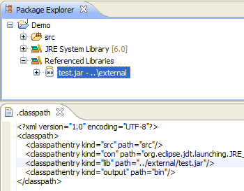
|
|
Build path resolution tolerates duplicate entries
|
Duplicate entries in the build path are now tolerated if the redundant entry is found while resolving the build path
and not at the raw level.
For example, two user libraries used in the project build path referring to the same JAR file are tolerated:
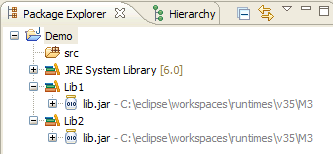
However, an error is reported if the same JAR file is directly specified twice:
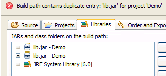
|
|
Compiler problem for missing hashCode() method
|
The compiler can now detect whether a class overrides the equals() method
without overriding the hashCode() method:
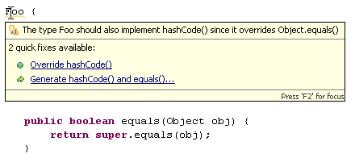
You can either use the quick fix to override the hashCode() method or the quick fix to regenerate both methods.
This problem is not reported by default. You can enable it on Preferences > Java > Compiler > Errors/Warnings
in the Potential programming problems section.
|
|
Compiler problem for dead code
|
The compiler can now issue a warning if dead code is detected.
For instance, if (false) foo(); is not reported as truly unreachable code by the Java Language Specification.
When this diagnostic is enabled, the invocation of foo() is signaled as dead code:
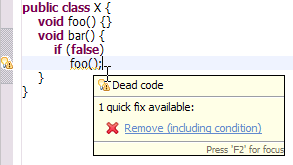
This problem is reported as a warning by default. You can configure the problem severity on Preferences > Java > Compiler > Errors/Warnings
in the Potential programming problems section
Note that dead code following an if (constant variable) statement, e.g. if (DEBUG), is not reported.
|
|
Compiler compliance follows execution environment
|
When you change the JRE on the build path of a Java project to an execution
environment, Eclipse now automatically updates the compiler compliance settings
on the Java Compiler properties page to use the settings defined by the execution environment.
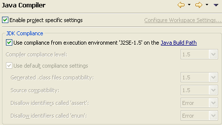
Note that as of M6 an execution environment is the first choice when
creating a new Java project or a launch configuration.
|
|
Java Views and Dialogs |
|
Emphasized matching characters in Open Type dialog
|
The Open Type dialog now emphasizes the characters that match the pattern:

|
|
Sort working sets in Package Explorer
|
The Configure Working Sets... dialog now has a Sort working sets option to sort working sets alphabetically.
The settings are preserved, so the working sets stay sorted, even as new working sets are added.
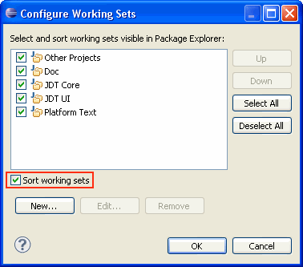
You can enable working sets in the Package Explorer via the Top Level Elements > Working Sets view menu.
|
|
Delete working sets from the Package Explorer
|
The Delete functionality is now enabled for working sets when the top level
elements are Working Sets in the Package Explorer. When deleting working sets, you can now either remove or
just hide them from the Package Explorer:
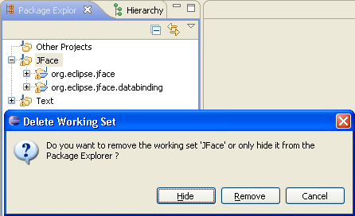
|
|
Paste patch into Package Explorer
|
What's the quickest way to apply a patch from Bugzilla? Just open the attachment,
copy the patch to the clipboard and paste it into the Package Explorer.
|
|
Call Hierarchy can expand with constructors
|
In Callers mode, the Call Hierarchy now has an Expand With Constructors action in the context menu for instance methods.
This action replaces the normal children of the method with
- the constructors of the method's declaring class
- a node that contains the direct callers of the method.
This is useful for methods in anonymous classes, for example to follow the callers that create a Runnable,
instead of those which actually call its run() method.
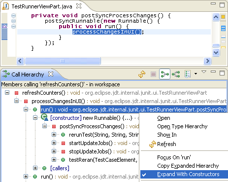
|
| Improved Javadoc view and hover |
The Javadoc view and hovers now support the {@inheritDoc} tag
and add links to overridden methods (like the Javadoc tool):

Moreover, the message for deprecated elements now shows up on top,
and relative links are supported (for example, to embed images from
the
"doc-files" directory or to link to {@docRoot}). |
|
Open *.jardesc files with JAR Export Wizard
|
Opening *.jardesc files now launches the JAR Export Wizard by default.

The Open JAR Packager... action in the context menu is gone.
|
|
Open test result files in JUnit view
|
JUnit test result files from Eclipse or the Ant JUnit tasks can now be opened in the JUnit view via
double click or via Open With > JUnit View.
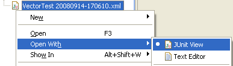
If the files are not inside your workspace, you can still open them
from the JUnit view via the Test Run History... drop-down menu.
And the Import... and Export... actions now always start at the most recently used location.
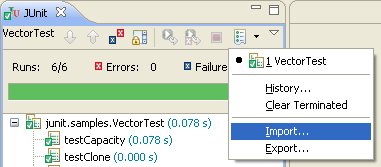
|
|
JUnit 4.5
|
The JUnit4 version shipped with Eclipse has been updated to 4.5.
See their Release Notes
for the changes in version 4.5.
|
|
Runnable Jar-in-Jar exporter can package libraries
|
The Runnable JAR File Export wizard can now also package the required libraries into the exported runnable JAR file
or into a folder next to the JAR:
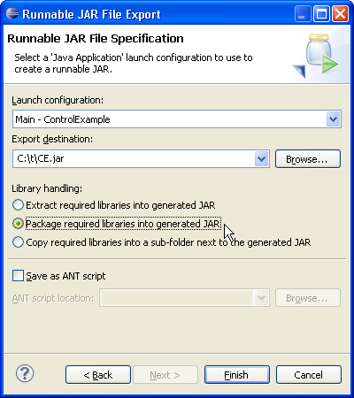
The advantage of the second and third options is that the required libraries
will just be copied and don't need be repackaged.
|
|
Java Debugger |